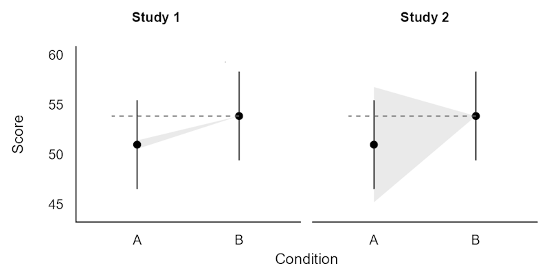
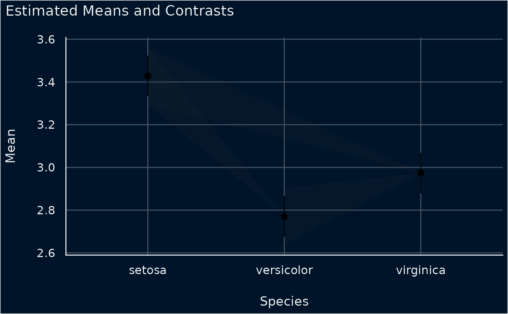
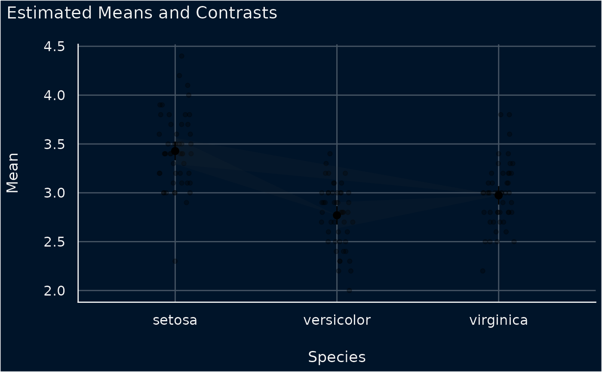
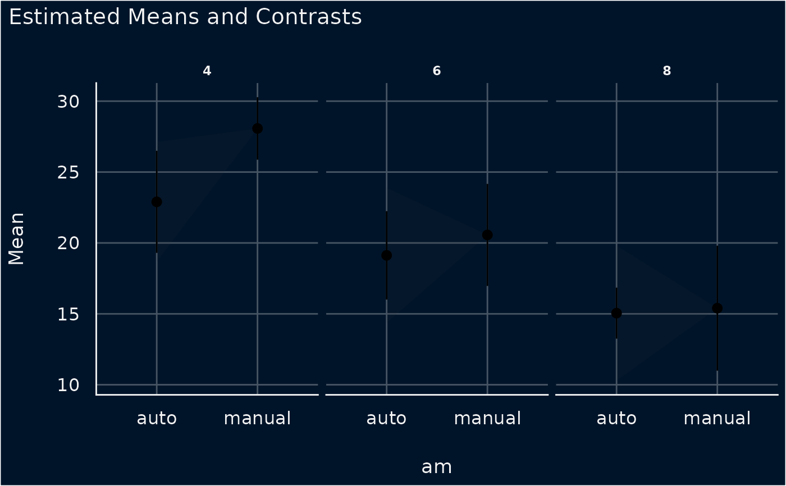
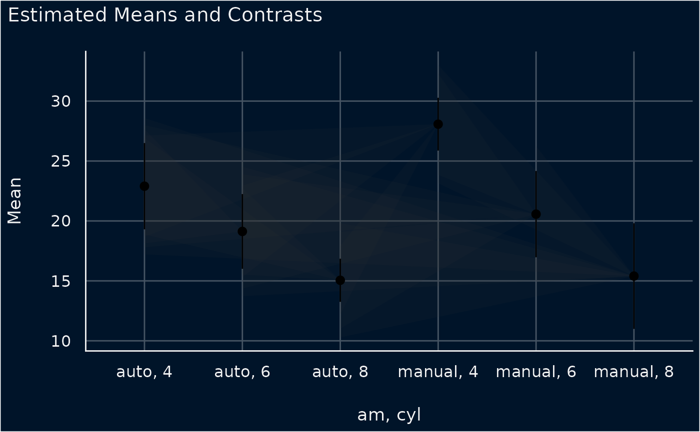

Plot method for estimating contrasts
Source:R/plot.estimate_contrasts.R
plot.see_estimate_contrasts.RdThe plot() method for the modelbased::estimate_contrasts()
function.
Usage
# S3 method for class 'see_estimate_contrasts'
plot(x, data = NULL, show_data = FALSE, ...)Arguments
- x
An object.
- data
The estimated means, obtained with
modelbased::estimate_means().- show_data
Logical. If
TRUE, the plot draws the raw data of the model as jittered points behind the lighthouses. The raw data come frominsight::get_data()for the model stored inx, not fromdata. A response that is logical or a factor with two levels is drawn as 0 and 1, withTRUEor the second level as 1. A responselog(y),log2(y), orlog10(y), withya column of the data, is drawn as the raw data ofyif both the contrasts and the means were estimated withtransform = TRUE. Means without thetransformattribute, such as a plain data frame, then give an error. Ratio contrasts are drawn with the raw data. The plot stops with an error in these cases:show_datais not a singleTRUEorFALSE.xis the output ofdata_plot(), or it does not carry its model, or the model data cannot be retrieved.The response is a
cbind()of successes and failures in a binomial model.The model transforms the response, for example
log(y), and the contrasts and means are not back-transformed log contrasts and means as above.The
predictof the contrasts or of the estimated means is not one of"prediction","response","expectation","invlink(link)", and"inverse_link", for examplepredict = "link". Means without this information, such as a plain data frame, are taken to be on the same scale as the contrasts.The model data lack the response or a contrasted or
byvariable.The estimated means do not include each value in the data of the contrasted and
byvariables, or each combination of their values. For example, a numericbyvariable has values that the means were not estimated at.
- ...
Arguments passed to or from other methods.
Details
If you estimate the contrasts with by, the plot draws each contrast from
the estimated means of its own by level. The plot then has one panel per
level, or combination of levels, of the by variables. The estimated means
must include the contrasted variables and the by variables, and no other
variables that split their rows further. If the means have no row for the
levels of a contrast, the plot does not draw that contrast and gives a
warning.
If you contrast two or more variables jointly, for example with
contrast = c("am", "cyl"), the x axis shows their combinations of levels,
such as "auto, 4". The first variable changes slowest along the axis.
The plot takes the estimates from the column of the means that their
coef_name attribute names. For means without this attribute, such as a
plain data frame, it takes the first of the columns Median, Mean, MAP,
Coefficient, Probability, Proportion, and Rate. If the means have
none of these columns, the plot stops with an error.
Each lighthouse starts at the estimated mean of Level1 of a contrast. For
a difference, the lighthouse at Level2 spans that mean minus the bounds of
the confidence interval. Contrasts with a Ratio column, from
comparison = ratio ~ pairwise, are ratios of the means, so the lighthouse
at Level2 spans that mean divided by the bounds of the interval. If the
interval of a ratio includes 0, the plot does not draw that contrast and
gives a warning. The contrasts must have the columns CI_low and
CI_high.
Contrasts estimated with transform = TRUE are back-transformed to the scale
of the response. With the default backend, if the model response is
log(y), log(y, base = b), log2(y), or log10(y), these contrasts are
ratios of the back-transformed means, and the plot draws them as ratios. If
insight::find_transformation() reports the transformation "identity",
as it does for an untransformed response and for scale(y), the plot draws
them as differences. For other transformations, such as sqrt(y), and for
transformations that insight::find_transformation() does not recognize,
the plot stops with an error. With backend = "emmeans", which sets
transform = TRUE by default, the contrasts are differences of the
back-transformed means, and the plot draws them as differences. The plot
stops with an error for ratio contrasts estimated with transform = TRUE,
because for a transformed response they are not ratios of the
back-transformed means.
The contrasts and the means must be on the same scale. The plot stops with
an error if both record a predict value and the two differ. The predict
values "response", "inverse_link", and "invlink(link)" count as the
same scale. The plot also stops with an error if both record a transform
value and the two differ. If neither value is a transform function and
insight::find_transformation() reports the transformation "identity",
the plot does not stop. Contrasts and means estimated with the same
transform function also differ, because modelbased records the function
on the contrasts and transform = TRUE on the means, so the plot stops.
Interpreting Lighthouse Plots
Lighthouse plots display both estimated marginal means and the uncertainty around their pairwise differences (contrasts) in a single visual:
Means and Error Bars: The points and vertical line ranges display the estimated marginal means for each level along with their individual confidence intervals.
Lighthouse Beams (Projected Uncertainty): The shaded polygonal bands ("beams") represent the pairwise contrasts. A beam originates at the point estimate of a reference level and projects toward the comparison level. At the target level, the vertical span of the beam represents the confidence interval of the estimated difference, anchored at the reference mean.
Interpretation: The vertical span of the projected beam at the target level corresponds to the confidence interval of the estimated difference, evaluated relative to the reference point estimate. Intuitively, it answers: "If the reference level is at value Y, where do we expect the comparison level to be based on the estimated contrast?"
Reading Significance: Because the beam illustrates the confidence interval of the difference, zero difference corresponds to a horizontal line from the reference point. If both edges of the beam tilt in the same direction (both rising or both falling), the confidence interval does not include zero (the difference is statistically significant). If one edge rises while the other falls, the beam straddles the horizontal line, indicating that a difference of zero remains plausible.

Lighthouse plots of the two studies. In black, each condition's mean and 95% CI, identical in both panels. In grey, the beam: the 95% CI of the difference between B and A, cast from B. The dashed horizontal line, added here as a reading aid, makes it easier to see which way each edge tilts.Examples
# \donttest{
library(modelbased)
model <- lm(Sepal.Width ~ Species, data = iris)
contrasts <- estimate_contrasts(model)
#> We selected `contrast=c("Species")`.
means <- estimate_means(model)
#> We selected `by=c("Species")`.
plot(contrasts, means)

# with the raw data as jittered points
plot(contrasts, means, show_data = TRUE)

# contrasts of `am` within each level of `cyl`, one panel per level
d <- mtcars
d$cyl <- factor(d$cyl)
d$am <- factor(d$am, labels = c("auto", "manual"))
model <- lm(mpg ~ cyl * am, data = d)
contrasts <- estimate_contrasts(model, contrast = "am", by = "cyl")
means <- estimate_means(model, by = c("cyl", "am"))
plot(contrasts, means)

# joint contrasts of `am` and `cyl`, on an axis of combined levels
contrasts <- estimate_contrasts(model, contrast = c("am", "cyl"))
plot(contrasts, means)

# }